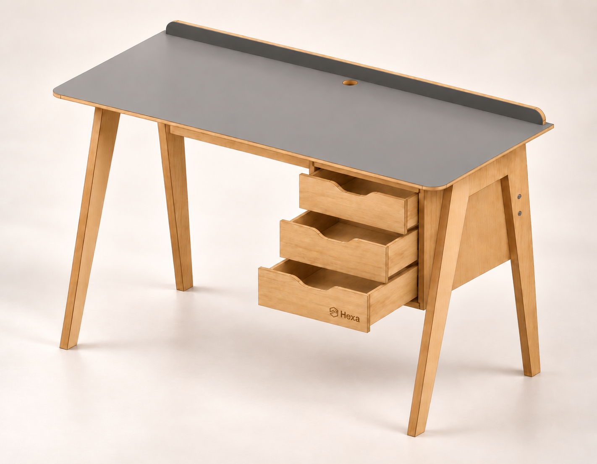
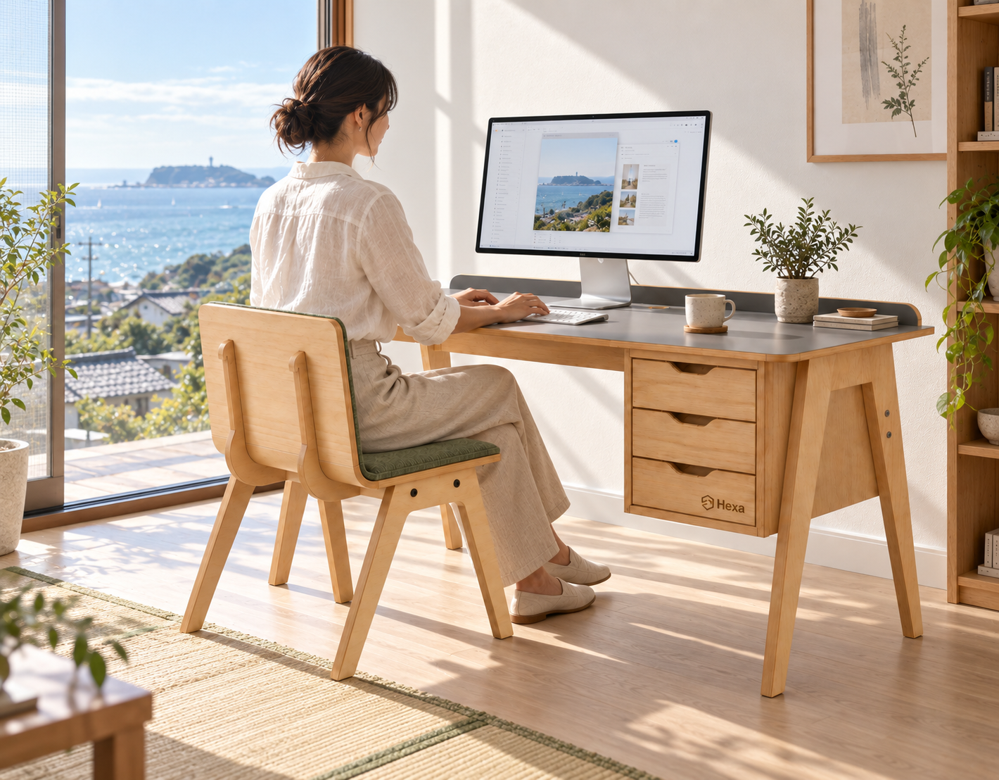
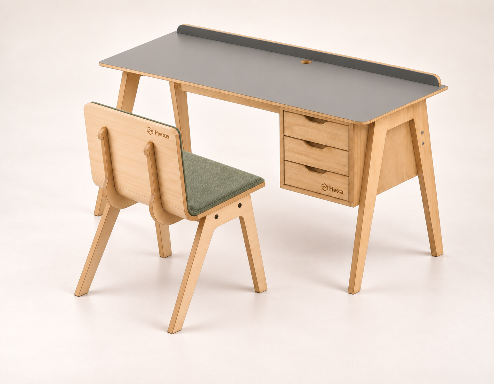
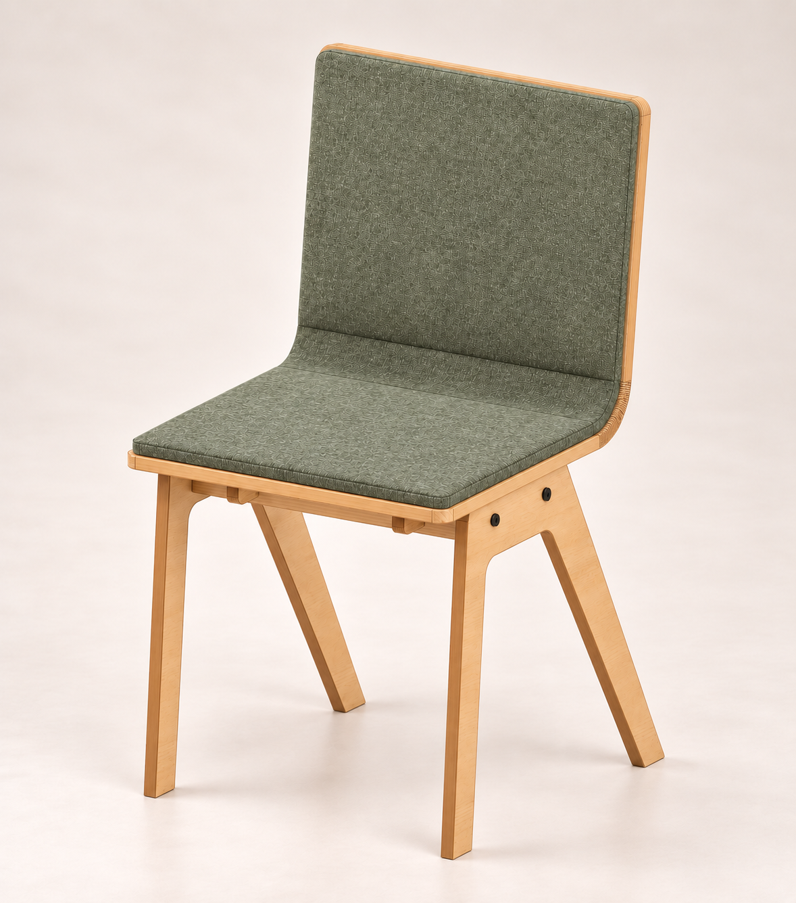

何気ない動作に、上質を。
滑らかに動き、閉じ際は静かに引き込む。ソフトクローズ＋セルフクローズで、毎日の何気ない所作を心地よく。
Hexa MODULES / OFFICE
バーチの温もりに、静かなグレーとやわらかなグリーン。手に触れる感触、引き出しの動き、座る姿勢。ひとつひとつを丁寧に整えた、デスクとチェアの一組です。毎日向かう机だからこそ、長く寄り添えるものを。


DESK & CHAIR
デスクとチェア、一組で整える仕事場。低反発クッションを備えたチェアと、3段の引き出しを備えたデスクを、完成品でお届けします。
¥330,000デスク＋チェアセット / 税込・送料別
デスクの表記は天板寸法で、脚部を含む外形寸法とは異なります。

滑らかに動き、閉じ際は静かに引き込む。ソフトクローズ＋セルフクローズで、毎日の何気ない所作を心地よく。

座面の高さと背の角度を考えた設計。ゆとりある座面と低反発クッションが、仕事に向かう姿勢を支えます。
火山灰を思わせる落ち着いたグレー。主張を抑えた色合いが、さまざまな素材や色と調和し、空間に洗練された印象を添えます。
MADE TO ORDER
受注生産・納期約2〜3ヶ月。表示価格は税込、送料別です。
写真は製品の使用イメージで、細部は実製品と異なる場合があります。ディスプレイ・キーボードなどの撮影小物は含まれません。